WORK — 01
Short-Form
Director at an MCN agency: end-to-end content for multiple creator accounts — topic, script, shoot, edit — with several videos closing in on 1M views.
≈1M
VIEWS / TOP CLIPS
¥10K+
LIVE REVENUE
9
SELECTED VIDEOS
MULTI
CREATOR ACCOUNTS
ACCOUNT GROWTH · LIVE PROOF
Past Creator Account Performance
These are backend metrics from accounts I have produced for. On average each clip achieved tens-of-thousands-level view counts across short-video platforms.
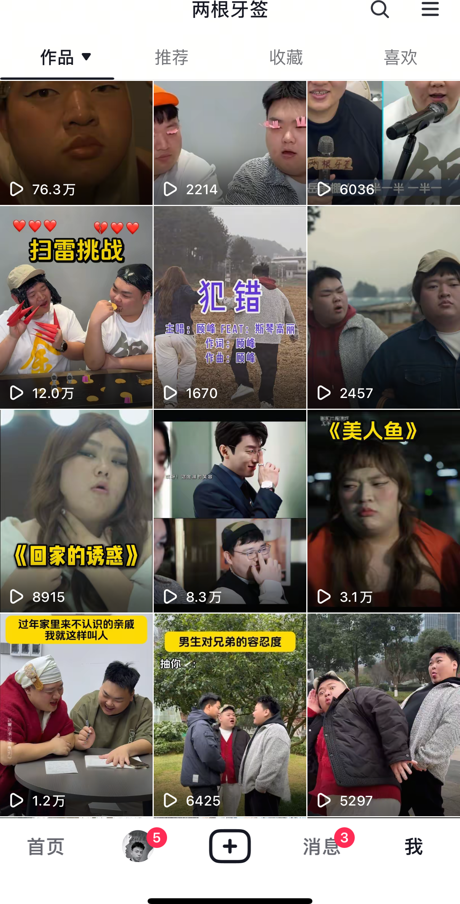
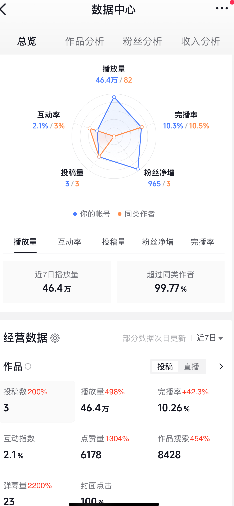
Two Creator Accounts I Have Operated
One general-traffic content account and one narrative-drama-focus account, with follower sizes at 30 k and 16 k respectively.
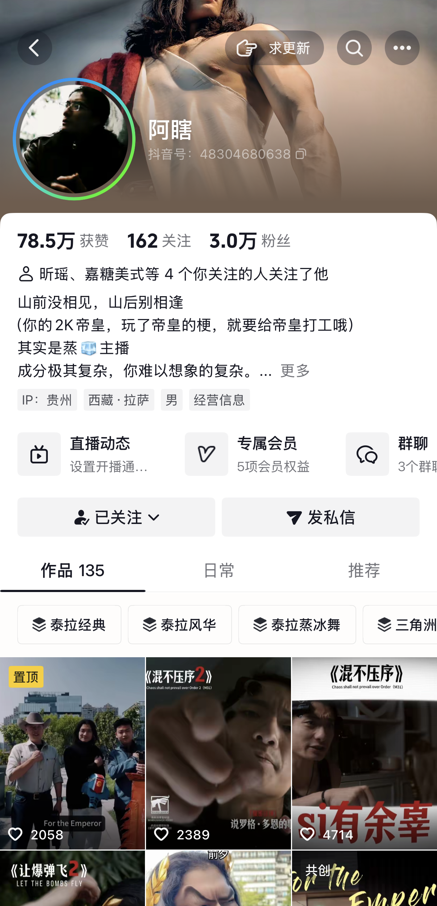
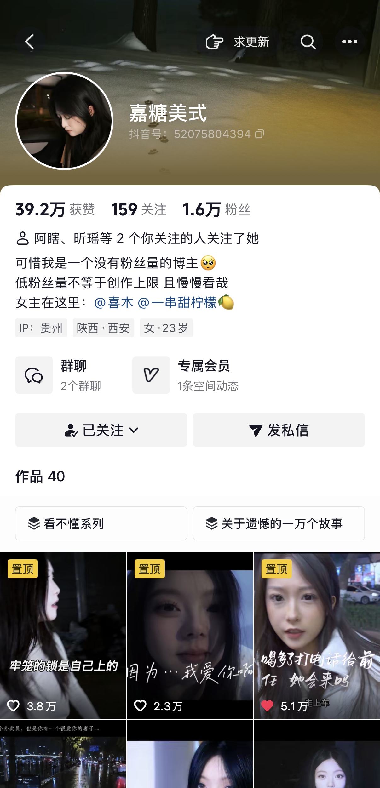
Backend Performance Snapshot
Typical average view benchmark for content output sits around 200 k per piece.
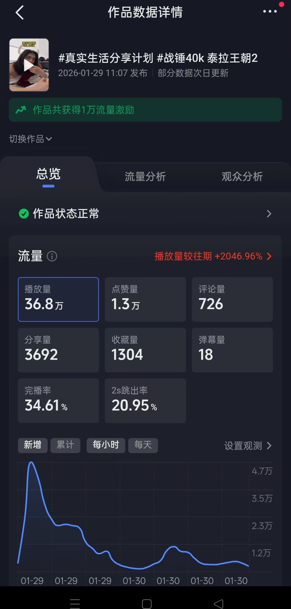
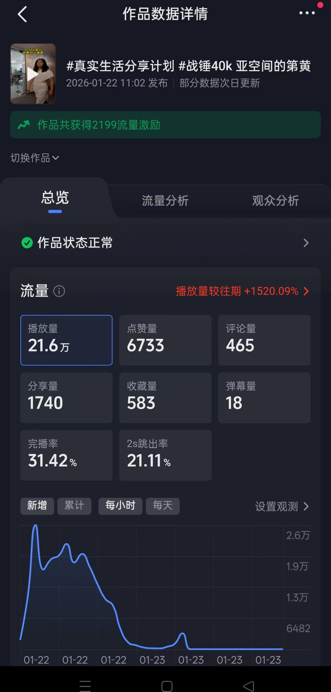
SELECTED VIDEOS · VERTICAL
DISAPPOINTED
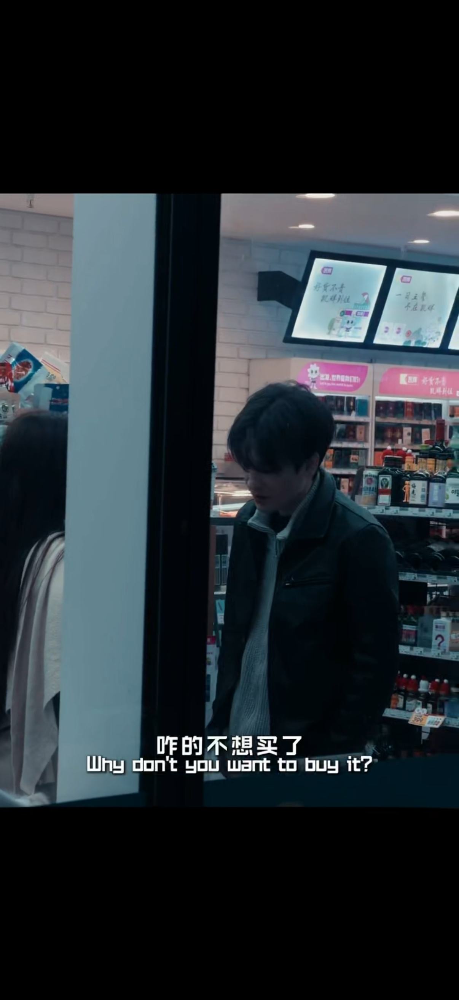
SHORT DRAMAA short drama about unmet expectations — quiet, close-up, cut to the emotion.
SMALL-TOWN POETICS
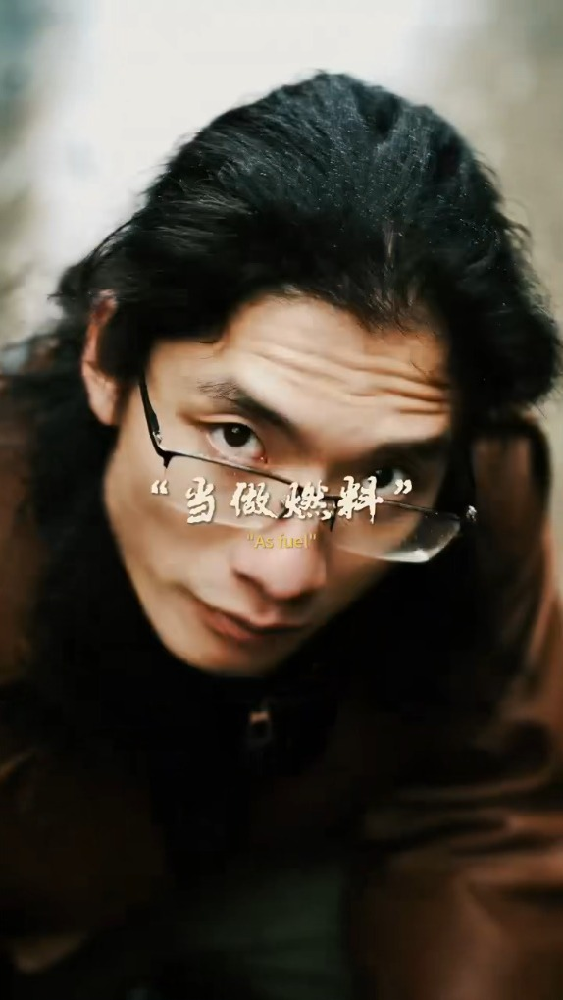
MOOD FILMSmall-town poetics — drifting shots and voiceover, mood carried by grade and pace.
STREET STALL
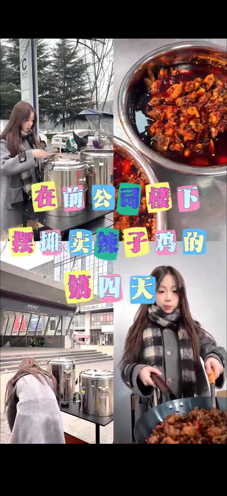
E-COM VLOGE-commerce vlog for the street-stall account — doc-style selling that drove live bookings.
SELECTED VIDEOS · WIDE
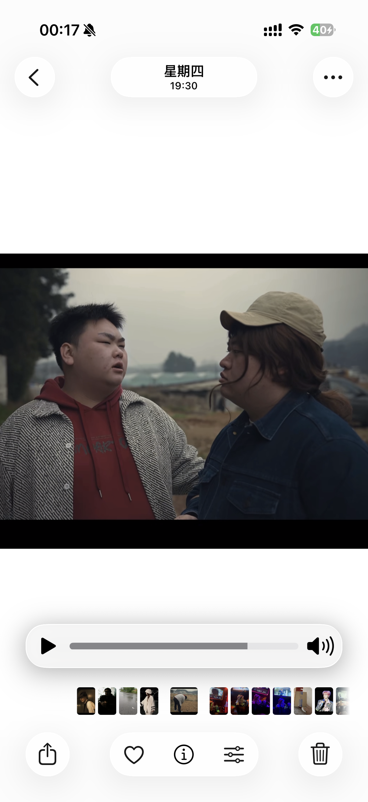
PLANTING POTATOES · COMEDY
TikTok · ~1M views · comedy skit
A rural comedy short — hook in the first 3 seconds, punchline held for the cut. Topic, script, shoot and edit all in-house.
≈1Mviews on TikTok — the break-out comedy skit for the account.
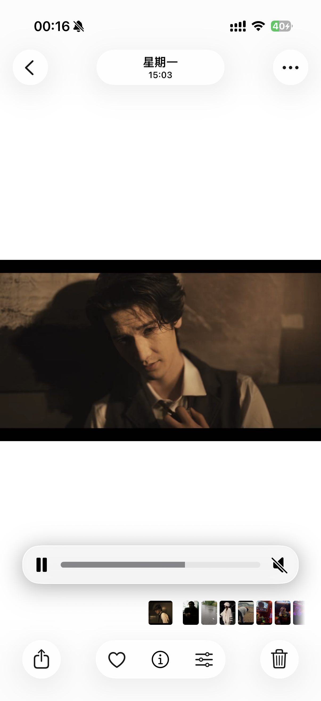
PEAKY MOOD · MOOD FILM
TikTok · trending · mood edit
A gangster-mood montage — match cuts and a low, driving score. Colour-grade and rhythm tuned to the beat.
MOODColour-grade and score doing the heavy lifting — no dialogue, no captions.
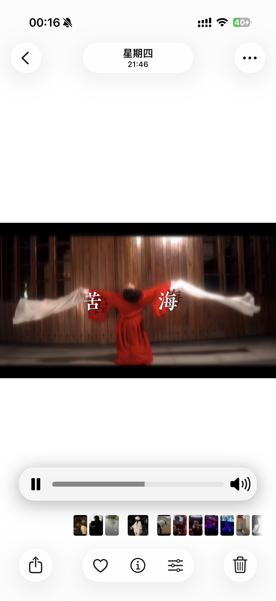
SEA OF SORROW · TREND CUT
TikTok · trend · transition
A transition-driven trend cut — built on the sound, masked wipes timed to each beat drop.
BEATEvery wipe lands on a drop. Cut entirely to the sound design.
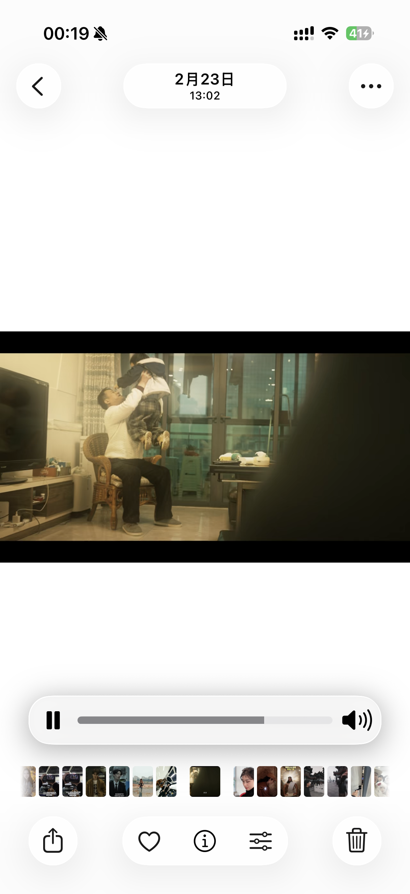
TIME-REVERSAL · TREND CUT
TikTok · trend · transition
Reversing time as a hook — seamless reverse cuts and a formula reveal at the midpoint.
REVERSEBuilt backwards from the reveal, then played forward.
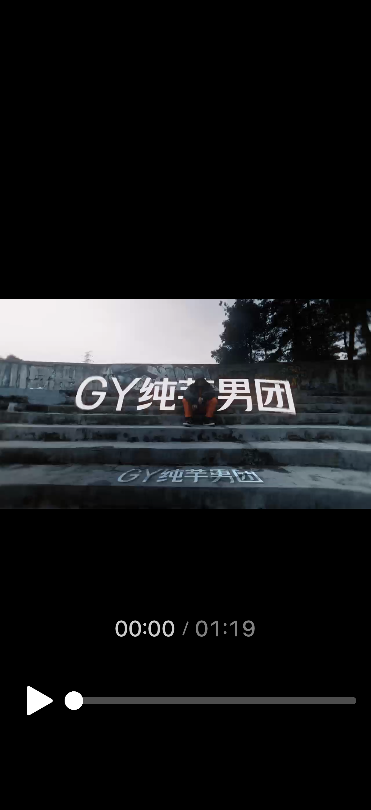
CALL ME BABY · MV
TikTok · music video · dance
Boy-group MV cut — choreography held in wide shots, beat-synced speed ramps on the chorus.
MVFull music-video cut — choreography, coverage and speed ramps.
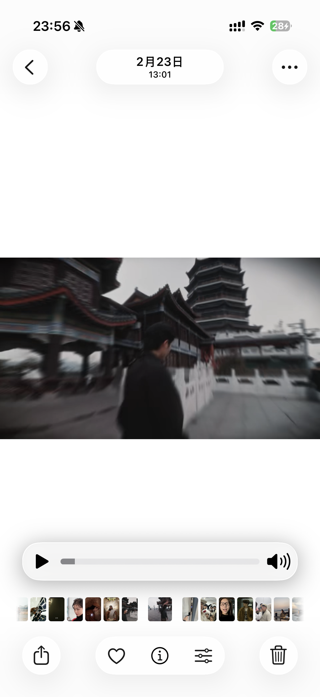
PUM IT UP · DANCE CAM
TikTok · dance · camera move
One-take dance with moving camera — orbit and push-in moves planned to the count.
1 TAKEOne continuous take, camera moves blocked to the count.